第33讲 普查、抽样调查与统计图
第33讲 普查、抽样调查与统计图

课程标准 | 学习目标 |
①.掌握抽样调查与全面调查 ②掌握总体、样本、个题及样本容量 | 1.掌握抽样调查与全面调查的区别并能够正确选择调查方式； 2.掌握总体、样本、个题及样本容量的概念； 3.掌握各个统计图的特点并能够正确选择统计图； 4.掌握各个统计图的相关计算. |


知识点01 全面调查和抽样调查
1.全面调查：考察全体对象的调查叫做全面调查．
【说明】（1）全面调查又叫“普查”，它是指在统计的过程中，为了某种特定的目的而对所有考察的对象一一作出的调查，在记录数据时，通常用划记法进行记录数据．
（2）一般来说，全面调查能够得到全体被调查对象的全面、准确的信息，但有时总体中的个体的数目非常大，全面调查的工作量太大；有时受条件的限制，无法进行全面调查；有时调查具有破坏性(例如：测试一批灯泡的使用寿命或炮弹的杀伤半径等)，不能进行全面调查．
2.抽样调查：从调查对象中抽取部分对象进行调查，然后根据调查的数据推断全体对象的情况，这种调查方式称为抽样调查．
【说明】（1）从总体中抽取部分个体进行调查的方式，我们称抽样调查，在抽取的过程中，总体中的每一个个体都有相等的机会被抽到，像这样的抽样方式是一种简单随机抽样．
（2）抽样调查方便、快捷，能够减少调查统计的工作量但调查的结果不如“全面调查”得到的结果准确．
3.调查方法的选择：
①全面调查是对考查对象的全体调查，它要求对考查范围内所有个体进行一个不漏的逐个准确统计；而抽样调查则只是对总体中的部分个体进行调查，以样本来估计总体的情况.
②在调查实际生活中的相关问题时，要灵活处理，既要考虑问题本身的需要，又要考虑实现的可能性和所付出代价的大小.
【即学即练1】
1．（23-24七年级下·山东济宁·期末）下列调查方式，你认为最合适的是（ ）
A．日光灯管厂要检测一批灯管的使用寿命，采用普查方式
B．了解济宁市每天的流动人口数，采用抽样调查方式
C．了解济宁市民对各类电视节目的喜爱情况，采用普查方式
D．旅客上飞机前的安检，采用抽样调查方式
【答案】B
【知识点】判断全面调查与抽样调查
【分析】本题考查的是抽样调查和全面调查的区别，选择普查还是抽样调查要根据所要考查的对象的特征灵活选用，一般来说，对于具有破坏性的调查、无法进行普查、普查的意义或价值不大，应选择抽样调查，对于精确度要求高的调查，事关重大的调查往往选用普查．根据普查得到的调查结果比较准确，但所费人力、物力和时间较多，而抽样调查得到的调查结果比较近似解答．
【详解】解：A．日光灯管厂要检测一批灯管的使用寿命，应该采用抽样调查，故A错误；
B．了解济宁市每天的流动人口数，应该采用抽样调查方式，故B正确；
C．了解济宁市民对各类电视节目的喜爱情况，应该采用抽样调查方式，故C错误；
D．旅客上飞机前的安检，应该采用普查方式，故D错误．
故选：B．
知识点02 总体、个体、样本、样本容量
总体：调查时，调查对象的全体叫做总体.
个体：组成总体的每一个调查对象叫做个体.
样本：从总体中取出的一部分个体叫做总体的一个样本.
样本容量：样本中个体的数量叫做样本容量（不带单位）.
（1）“调查对象的全体”一般是指调查对象的某种数量指标的全体，如对于一个班级，如果考察的是这个班学生的身高，那么总体是指这个班学生身高的全体，不能错误地理解为学生的全体是总体．
（2）样本是总体的一部分，一个总体中可以有许多样本，样本在一定程度上能够反映总体，为了使样本能较好地反映总体情况，在选取样本时要注意使其具有一定的代表性．
（3）样本容量是一个数字，不能有单位．一般地，样本容量越大，通过样本对总体的估计越精确，在实际研究中，要根据具体情况确定样本容量的大小．例如：“从5万名考生的数学成绩中抽取2000名考生的数学成绩进行分析”，样本是“2000名考生的数学成绩”，而样本容量是“2000”，不能将其误解为“2000名考生”或“2000名”．
【即学即练2】
2．（23-24八年级下·江苏盐城·期中）今年盐城市有5万名学生参加中考，为了了解这些考生的数学成绩，射阳教育部门抽取了1500名考生的数学成绩进行统计分析，在这个问题中，下列说法正确的是（ ）
A．1500名考生是总体的一个样本
B．每个考生是个体
C．这5万名学生的数学中考成绩的全体是总体
D．样本容量是1500名学生
【答案】C
【知识点】总体、个体、样本、样本容量
【详解】本题考查了总体、个体、样本、样本容量的概念．总体是指考查的对象的全体，个体是总体中的每一个考查的对象，样本是总体中所抽取的一部分个体，而样本容量则是指样本中个体的数目．我们在区分总体、个体、样本、样本容量，这四个概念时，首先找出考查的对象，从而找出总体、个体.再根据被收集数据的这一部分对象找出样本，最后再根据样本确定出样本容量．
【解答】解：A、1500名考生的数学成绩是总体的一个样本，此选项不合题意；
B、每个考生的数学成绩是个体，此选项不合题意；
C、这5万名学生的数学中考成绩的全体是总体，此选项符合题意；
D、样本容量是1500，此选项不合题意．
故选：C．
知识点03 数据表示与统计图的选择
1.条形统计图：用线段长度表示数据，根据数据的多少画成长短不同的长方形直条，然后按顺序把这些直条排列起来，条形统计图很容易看出数据的大小，便于比较，但不能清楚地反映各部分占总体的百分比．
2.扇形统计图：用整个圆表示总体，用圆内各个扇形的大小表示各部分数量，从扇形上可清楚地看出各部分量和总数量之间的关系，但不能直接表示出各个项目的具体数据．
3.折线统计图：用一个单位长度表示一定的数量，根据数量的多少描出各点，然后把各点用线段依次连接起来，折线图不但可以表示出数量的多少，而且能够清楚地表示出数量的增减变化情况，但不能清楚地反映数据的分布情况．
【即学即练3】
3．（2024·浙江·模拟预测）【数据的收集与整理】
猫眼研究院发布《2024春节档电影数据洞察报告》数据显示，今年春节档电影总票房创历史新高．春节档8天日票房收入及票房冠军《热辣滚烫》在日票房收入中所占比重分别如图所示．（数据来源：猫眼专业版）

【数据分析】
(1)下列结论中，所有正确结论的序号是__________．（填序号）
①初一至初八日票房收入超过10亿的天数占 ；
；
②初一至初八《热辣滚烫》票房在日票房收入中所占比重呈先上升再下降的趋势；
③《热辣滚烫》日票房收入最高的一天是初四．
(2)2024春节档8天微博电影相关热搜总数为946个，将微博映后热搜类型分布、各级城市票房收入占比和观众性别比例绘制成如图统计图．

①求“全民讨论”的热搜个数（精确到个位）；
②结合各级城市票房收入占比和观众性别比例分析，如果你是投资方，来年的春节档你投资影片会考虑哪些因素？
【答案】(1)①②
(2)①542 ②考虑女性观众的视角，投资反应社会上女性在生活、工作时真实现状的影片
【知识点】折线统计图、由扇形统计图推断结论、求扇形统计图的某项数目、由条形统计图推断结论
【分析】此题考查了条形统计图和折线图，扇形统计图，解题的关键是正确分析统计图中的数据．
（1）根据统计图中的数据求解即可；
（2）①用总人数乘以“全民讨论”的热搜所占的百分比即可求解；
②根据四线城市占比最多，女性观众占比高于男性观众求解即可．
【详解】（1）①初一至初八日票房收入超过10亿的天数有4天，共8天
∴初一至初八日票房收入超过10亿的天数占，故①正确；
②初一至初八《热辣滚烫》票房在日票房收入中所占比重呈先上升再下降的趋势，故②正确；
③《热辣滚烫》日票房收入最高的一天是初四．
初一《热辣滚烫》日票房收入为
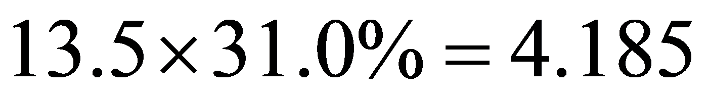
（亿元）初二《热辣滚烫》日票房收入为
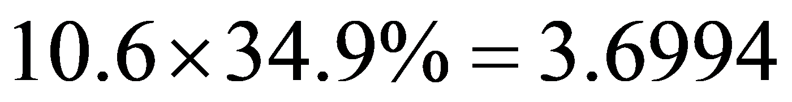
（亿元）初三《热辣滚烫》日票房收入为
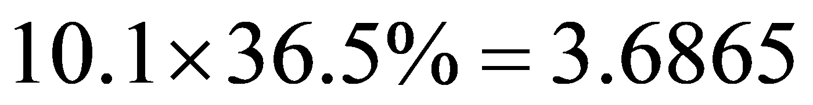
（亿元）初四《热辣滚烫》日票房收入为
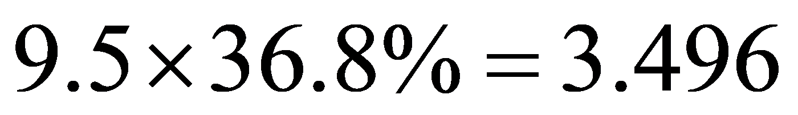
（亿元）初五《热辣滚烫》日票房收入为
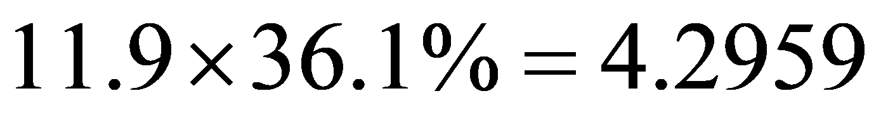
（亿元）初六《热辣滚烫》日票房收入为
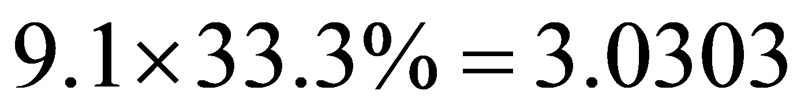
（亿元）初七《热辣滚烫》日票房收入为
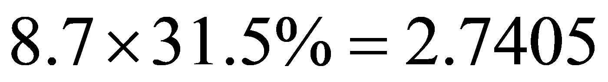
（亿元）初八《热辣滚烫》日票房收入为
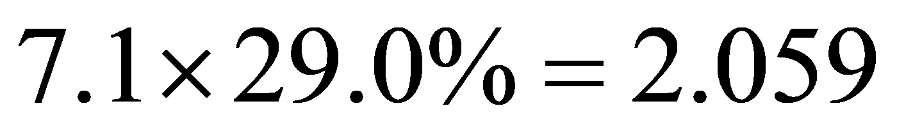
（亿元）∴《热辣滚烫》日票房收入最高的一天是初五，故③错误；
（2）①“全民讨论”的热搜个数约为
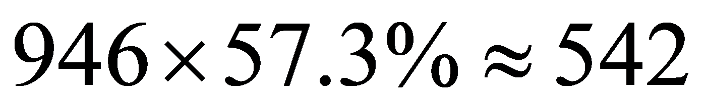
（个）；②∵四线城市占比最多，女性观众占比高于男性观众
∴来年的春节档投资会考虑女性观众的视角，投资反应社会上女性在生活、工作时真实现状的影片．

题型01 全面调查与抽样调查
【典例1】（23-24七年级下·云南玉溪·期末）下列采用的调查方式中，不合适的是（ ）
A．调查市场上某种野生菌的蛋白质含量，采用抽样调查
B．调查红塔区学生对午托供餐的满意度，采用抽样调查
C．调查某批次汽车的抗撞击能力，采用全面调查
D．了解某班同学的视力情况，采用全面调查
【答案】C
【知识点】判断全面调查与抽样调查
【分析】本题考查的是全面调查和抽样调查，根据全面调查和抽样调查的概念判断即可．通过普查可以直接得到较为全面、可靠的信息，但花费的时间较长，耗费大，且一些调查项目并不适合普查．其一，调查者能力有限，不能进行普查．其二，调查过程带有破坏性．其三，有些被调查的对象无法进行普查．
【详解】解：A、调查市场上某种野生菌的蛋白质含量，采用抽样调查，正确；
B、调查红塔区学生对午托供餐的满意度，采用抽样调查，正确；
C、调查某批次汽车的抗撞击能力，适合做抽样调查，原说法错误；
D、了解某班同学的视力情况，采用全面调查，正确．
故选：C．
【变式1】（2024七年级上·全国·专题练习）下列调查中，最适合采用全面调查（普查）方式的是（ ）
A．了解郑州市二七区中学生最喜爱的节目
B．对郑州实验外国语学校水质情况的调查
C．神舟十八号载人飞船发射前对重要零部件的检查
D．了解郑州市二七区学生的视力情况
【答案】C
【知识点】判断全面调查与抽样调查
【分析】本题考查的是抽样调查和全面调查，选择普查还是抽样调查要根据所要考查的对象的特征灵活选用，一般来说，对于具有破坏性的调查、无法进行普查、普查的意义或价值不大，应选择抽样调查，对于精确度要求高的调查，事关重大的调查往往选用普查．
根据普查和抽样调查的特点解答即可．
【详解】解：A、了解郑州市二七区中学生最喜爱的节目，适用于抽样调查，故该选项不符合题意；
B、对郑州实验外国语学校水质情况的调查，适用于抽样调查，故该选项不符合题意；
C、神舟十八号载人飞船发射前对重要零部件的检查，适用于全面调查，故该选项符合题意；
D、了解郑州市二七区学生的视力情况，适用于抽样调查，故该选项不符合题意．
故选：C．
【变式2】（23-24七年级下·全国·单元测试）下列调查中，适宜采用抽样调查的是（ ）
A．调查某班学生的视力情况
B．调查冬奥会 短道速滑决赛运动员兴奋剂的使用情况
短道速滑决赛运动员兴奋剂的使用情况
C．调查某批国产汽车的抗撞击能力
D．调查“神十四”载人飞船各零部件的质量
【答案】C
【知识点】判断全面调查与抽样调查
【分析】本题考查的是抽样调查和全面调查的区别．根据普查得到的调查结果比较准确，但所费人力、物力和时间较多，而抽样调查得到的调查结果比较近似解答．
【详解】解：A、调查某班学生的视力情况，适合全面调查，故本选项不符合题意；
B、查冬奥会短道速滑决赛运动员兴奋剂的使用情况，适合全面调查，故本选项不符合题意；
C、调查某批国产汽车的抗撞击能力，适合抽样调查，故本选项符合题意；
D、调查“神十四”载人飞船各零部件的质量，适合全面调查，故本选项不符合题意．
故选：C．
【变式3】（22-23九年级上·重庆九龙坡·阶段练习）下列调查中，调查方式选择正确的是（ ）
A．为了了解某班学生的视力情况，选择抽样调查
B．为了了解中央电视台《开学第一课》的收视情况，选择全面调查
C．为了检测乘坐飞机的旅客是否携带违禁物品，选择抽样调查
D．为了对载人航天飞船“神舟十五号”的零部件进行检查，选择全面调查
【答案】D
【知识点】判断全面调查与抽样调查
【分析】本题考查了抽样调查和全面调查的区别，选择普查还是抽样调查要根据所要考查的对象的特征灵活选用，一般来说，对于具有破坏性的调查、无法进行普查、普查的意义或价值不大，应选择抽样调查，对于精确度要求高的调查，事关重大的调查往往选用普查．由普查得到的调查结果比较准确，但所费人力、物力和时间较多，而且抽样调查得到的调查结果不准确，只是近似值．
【详解】解：A、为了了解某班学生的视力情况，选择全面调查，故此选项原说法不合题意；
B、为了了解中央电视台《开学第一课》的收视情况，选择抽样调查，故此选项原说法不合题意；
C、为了检测乘坐飞机的旅客是否携带违禁物品，选择全面调查，故此选项原说法不合题意；
D、为了对载人航天飞船“神舟十五号”的零部件进行检查，选择全面调查，故此选项原说法符合题意．
故选：D．
题型02 总体、个体、样本、样本容量
【典例2】（24-25七年级上·全国·期末）某校为了了解学生对“二十四节气”的知晓情况，从全校6000名学生中，随机抽取了120名学生进行调查，在这次调查中（ ）
A．6000名学生是总体
B．所抽取的120名学生是总体的一个样本
C．6000名是样本容量
D．所抽取的120名学生对“二十四节气”的知晓情况是总体的一个样本
【答案】D
【知识点】总体、个体、样本、样本容量
【分析】本题考查了总体、个体、样本、样本容量的概念．首先找出考查的对象，从而找出总体、个体．再根据被收集数据的这一部分对象找出样本，最后再根据样本确定出样本容量．
【详解】解：A、6000名学生对“二十四节气”的知晓情况是总体，此选项说法错误，不符合题意；
B、所抽取的120名学生对“二十四节气”的知晓情况是总体的一个样本，此选项说法错误，不符合题意；
C、样本容量是120，此选项说法错误，不符合题意；
D、所抽取的120名学生对“二十四节气”的知晓情况是总体的一个样本，此选项说法正确，符合题意；
故选：D．
【变式1】（24-25七年级上·全国·期末）为了解某校七年级620名学生参加课外劳动的时间，从中抽取100名学生参加课外劳动的时间进行分析，在此次调查中，下列说法：①七年级620名学生参加课外劳动的时间是总体；②每个学生是个体；③被抽取的100名学生参加课外劳动的时间是样本；④样本容量是200名．其中正确的有（ ）
A．①④ B．①③ C．③④ D．②④
【答案】B
【知识点】总体、个体、样本、样本容量
【分析】本题考查统计知识的总体，样本，个体，普查与抽查等相关知识点．总体是指考查的对象的全体，个体是总体中的每一个考查的对象，样本是总体中所抽取的一部分个体，而样本容量则是指样本中个体的数目．
【详解】解：①七年级620名学生参加课外劳动的时间是总体，①正确；
②七年级620名学生中的每个学生参加课外劳动的时间是个体，故②错误；
③被抽取的100名学生参加课外劳动的时间是样本，③正确；
④样本容量是100名，故④错误．
故正确的有：①③，
故选：B．
【变式2】（23-24七年级下·全国·期末）某校有2000名学生，要想了解全校学生对新闻、体育、动画、娱乐、戏曲五类电视节目的喜爱情况，在全校学生注册学号中，随意抽取100个学号，调查这些学号对应的学生．下列说法错误的是（ ）
A．此次调查为抽样调查
B．总体是2000名学生
C．样本是每一名学生对五类电视节目的喜爱情况
D．样本容量是100
【答案】B
【知识点】总体、个体、样本、样本容量、判断全面调查与抽样调查
【分析】根据总体、个体、样本、样本容量的定义进行判断即可，本题考查了抽样类型以及总体、个体、样本、样本容量的定义，正确掌握相关性质内容是解题的关键．
【详解】解：A、本题中，采用的调查方法是抽样调查，故该选项是正确的，不符合题意；
B、总体是2000名学生对五类电视节目的喜爱情况，故该选项是不正确的，符合题意；
C、样本是每一名学生对五类电视节目的喜爱情况，故该选项是正确的，不符合题意；
D、样本容量是100，故该选项是正确的，不符合题意．
故选：B．
【变式3】（23-24七年级下·全国·单元测试）某地今年将有25000名考生参加中考，为了了解这25000名考生的体育成绩，从中抽取了1 000名考生的体育成绩进行统计分析，下列说法正确的是（ ）
A．该调查采用的是全面调查
B．25 000名考生是总体
C．1 000名考生的体育成绩是总体的一个样本
D．样本容量是
【答案】C
【知识点】总体、个体、样本、样本容量、判断全面调查与抽样调查
【分析】考查了总体、样本、样本容量和调查方式，总体是指考查的对象的全体，个体是总体中的每一个考查的对象，样本是总体中所抽取的一部分个体，而样本容量则是指样本中个体的数目．
【详解】解：A、为了了解这25000名考生的体育成绩，从中抽取了1 000名考生的体育成绩进行统计分析，故采用的是抽样调查，原说法错误，不符合题意；
B、25 000名考生的体育成绩是总体，原说法错误，不符合题意；
C、1 000名考生的体育成绩是总体的一个样本，原说法正确，符合题意；
D、样本容量是1000，原说法错误，不符合题意；
故选：C．
题型03 由样本所占百分比估计总体的数量
【典例3】（24-25九年级上·广西贺州·期中）贺州市成为我国第一个“全域长寿市”，优越的自然环境丰富了文旅资源，在这秋高气爽的季节，某校准备组织初一年级600名学生进行秋季研学活动，该校随机抽取了其中50名同学进行研学目的地意向调查，调查结果如图所示，估计初一年级愿意去姑婆山的学生人数为 人．
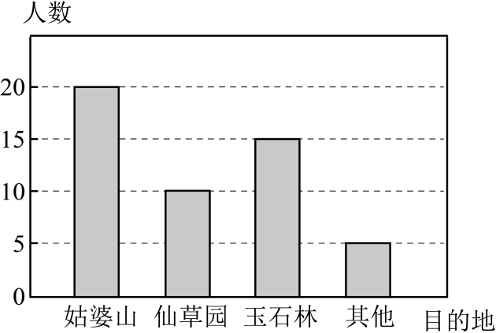
【答案】240
【知识点】由样本所占百分比估计总体的数量
【分析】本题主要考查用样本估计总体，一般来说，用样本去估计总体时，样本越具有代表性、容量越大，这时对总体的估计也就越精确．
用总人数乘以样本中去“姑婆山”的学生人数所占比例即可．
【详解】解∶估计初一年级愿意去“姑婆山”的学生人数为
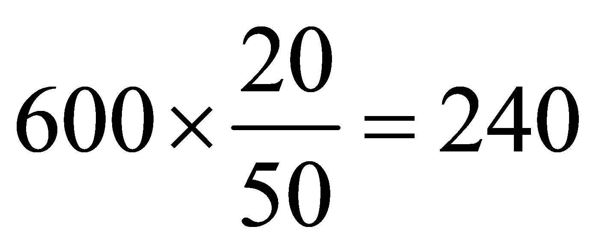
(人)，故答案为：240．
【变式1】（24-25九年级上·浙江温州·期中）检验员从200个工件中随机检测了10个工件的质量（单位：g），得到数据如表所示，当一个工件的质量x（单位：g）满足 时，评定该工件为合格品．根据数据，估计这200个工件中合格品的个数是 ．
时，评定该工件为合格品．根据数据，估计这200个工件中合格品的个数是 ．
49.97 | 50.02 | 50.00 | 49.99 | 50.02 |
49.99 | 50.01 | 50.03 | 50.00 | 49.98 |
【答案】
【知识点】由样本所占百分比估计总体的数量
【分析】本题考查了用样本估计总体，熟练掌握知识点是解题的关键．先计算出10个工件中合格品的数量，再用总数200乘以合格品的占比，即可求解．
【详解】解： 当一个工件的质量x（单位：g）满足时，评定该工件为合格品，
当一个工件的质量x（单位：g）满足时，评定该工件为合格品，
 检测得10个工件的质量中合格品有8个，
检测得10个工件的质量中合格品有8个，
这200个工件中合格品的个数是
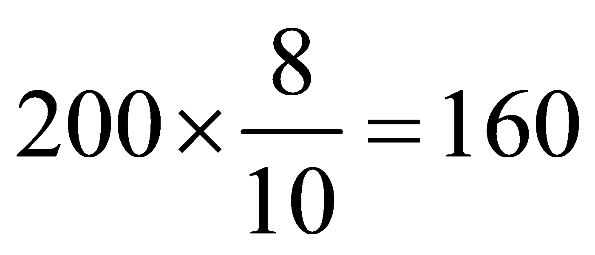
（个），故答案为：个．
【变式2】（23-24七年级下·云南昆明·期末）为估计鱼塘里有多少鱼，先从鱼塘中捕捞100条鱼做上标记，然后放回鱼塘，经过一段时间，待有标记的鱼完全混于鱼塘后，再捕捞200条鱼，发现其中20条标记，那么估计鱼塘中大约有鱼 条．
【答案】1000
【知识点】由样本所占百分比估计总体的数量
【分析】本题考查了用样本估计总体，用 除以
除以
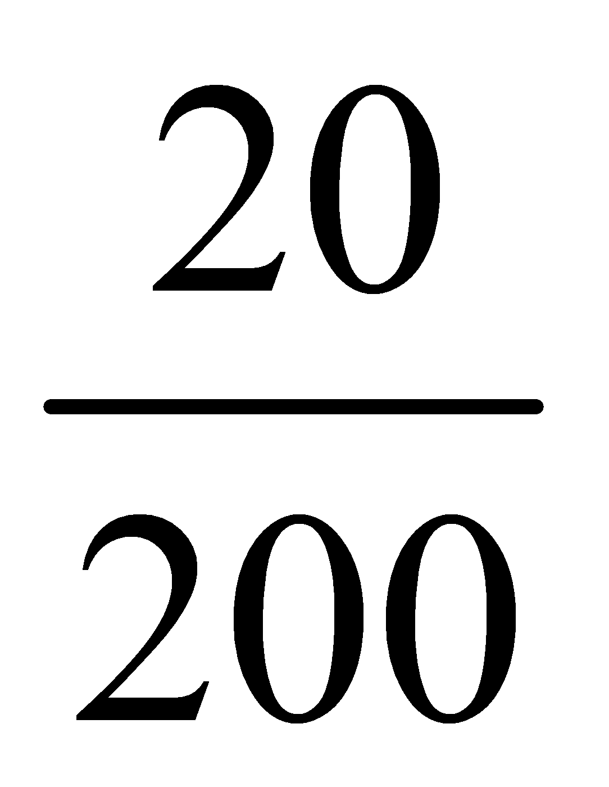
即可求解，掌握用样本估计总体的方法是解题的关键．【详解】解：
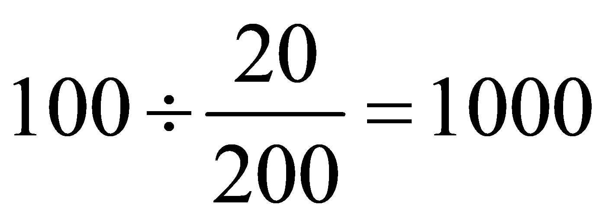
，∴估计鱼塘中大约有鱼 条，
条，
故答案为：．
【变式3】（2024·河南信阳·模拟预测）淮滨县实验学校为了监测学生的心理健康状况，对九年级学生进行了心理健康测试．小芳从中随机抽取50名学生，并把这些学生的测试成绩 （单位：分）制成了如下的扇形统计图，据此估计我校2000名九年级学生中测试成绩在分数段：
（单位：分）制成了如下的扇形统计图，据此估计我校2000名九年级学生中测试成绩在分数段：
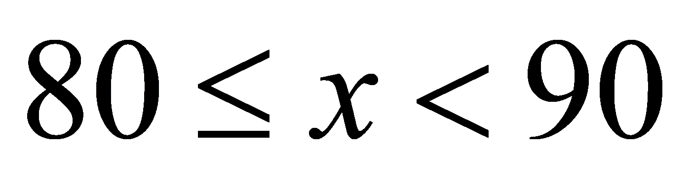
分的共有 名．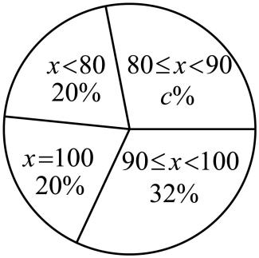
【答案】560
【知识点】由样本所占百分比估计总体的数量
【分析】根据用样本估计总体，先求出扇形统计图中的百分比，再乘以2000即可．
本题考查扇形统计图、用样本估计总体，能够读懂扇形统计图，掌握用样本估计总体是解答本题的关键．
【详解】解：由扇形统计图可知，
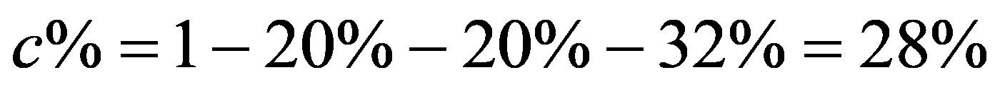
，估计该校2000名九年级学生中测试成绩在分数段分的共有
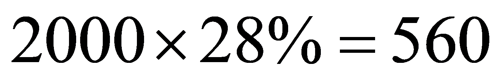
（名 ．
．故答案为：560．
题型04 条形统计图和扇形统计图信息关联
【典例4】（24-25八年级上·重庆沙坪坝·期中）电视剧《山花烂漫时》以“七一勋章”、“时代楷模”的获得者张桂梅老师为原型，描绘了她在云南华坪女子高级中学辛勤耕耘的画面，展现了英模人物的非凡力量，为了解初中部学生对“张桂梅老师事迹”的了解程度，我校随机抽取了部分初中学生进行调查，并将调查结果分为了五类：A．非常了解；B．比较了解；C．了解；D．不太了解；E．不了解．根据调查结果，绘制出如图所示的两幅不完全统计图，请根据图中信息，解答下列问题：

(1)本次被抽查的学生共有______名；在扇形统计图中，A类所对应的圆心角度数为______；
(2)请补全条形统计图；
(3)若我校共有3000名初中学生，估计我校初中学生对“张桂梅老师事迹”的了解程度为“D．不太了解”的人数．
【答案】(1)100，
(2)见解析
(3)420名
【知识点】由样本所占百分比估计总体的数量、条形统计图和扇形统计图信息关联
【分析】本题考查的是条形统计图与扇形统计图的知识，以及用样本估计总体，掌握条形统计图与扇形统计图之间的联系是解题的关键．
（1）由B组人数除以B组人数所占百分比求解即可；用 乘以A组人数所占百分比求解即可
乘以A组人数所占百分比求解即可
（2）由总人数减去其余三组的人数，可求出C组的人数，再补全即可；
（3）用总人数乘以样本中“D．不太了解”人数所占百分比可得答案．
【详解】（1）解：
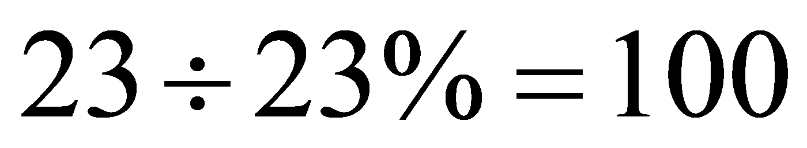
，∴本次被抽查的学生共有100名，
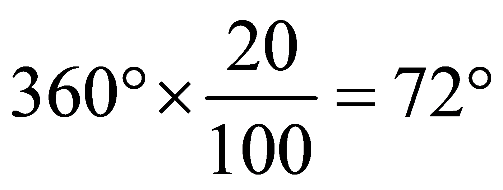
，∴A类所对应的圆心角度数为，
故答案为：100，；
（2）解：C组的人数为
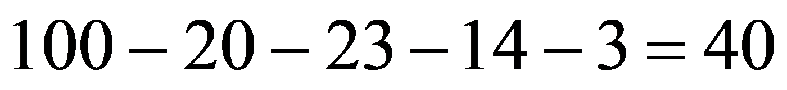
名，补图如下：
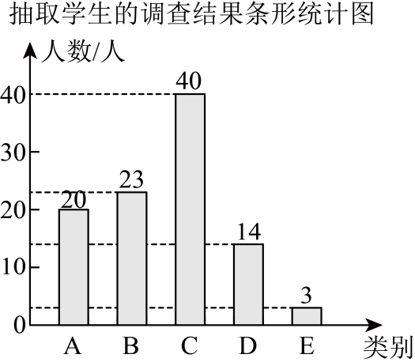
；（3）解：
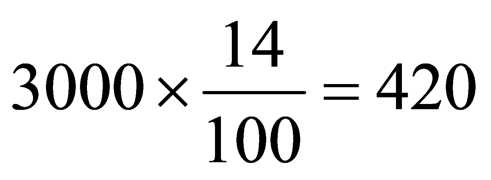
，∴估计我校初中学生对“张桂梅老师事迹”的了解程度为“D．不太了解”的人数为420名．
【变式1】（24-25九年级上·黑龙江哈尔滨·阶段练习）为迎接2025年中考，某中学对全校九年级学生进行了一次数学模拟考试，并随机抽取了部分学生的测试成绩作为样本进行分析，绘制成了如下两幅不完整的统计图，请你根据统计图中提供的信息解答下列问题：
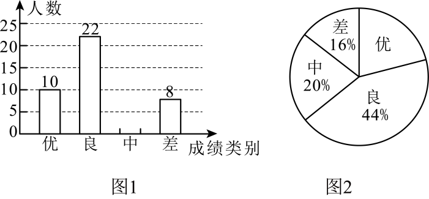
(1)求在这次调查中，样本中共抽取多少人；
(2)求出条形图“中”的人数；
(3)若该中学九年级共有800人参加了这次数学考试，估计该校九年级共有多少名学生的数学成绩可以达到优秀．
【答案】(1)50人
(2) 人
人
(3)160人
【知识点】由扇形统计图求总量、求条形统计图的相关数据、由样本所占百分比估计总体的数量、条形统计图和扇形统计图信息关联
【分析】本题考查条形统计图和扇形统计图的综合应用．从统计图中有效的获取信息，利用频数除以百分比求出总数是解题的关键．
（1）利用成绩类别为“差”的人数除以所占的百分比，求出总数；
（2）用总数乘以成绩类别为“中”的人数所占的百分比，进行求解即可；
（3）用800乘以样本中成绩类别为“优”的人数所占的比例进行求解即可．
【详解】（1）解：
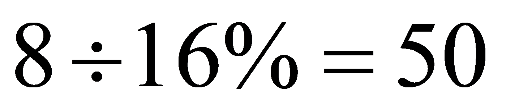
（人），答：抽取的总人数是50人；
（2）解：
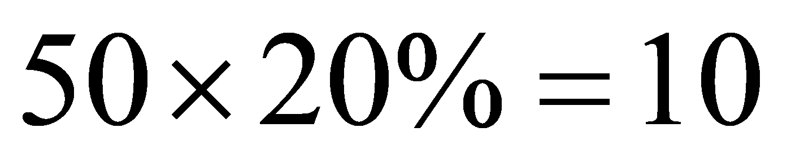
（人），答：条形图“中”的人数为10人；
（3）解：
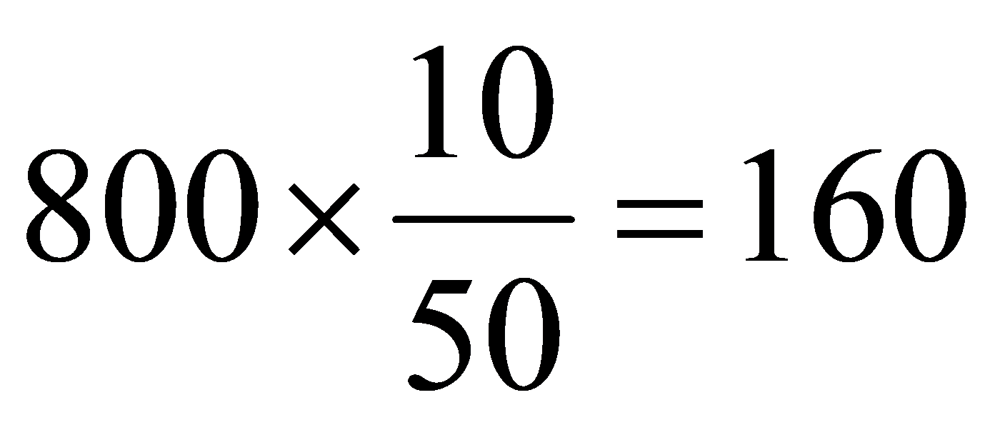
（人）答：估计该校九年级学生的数学成绩可以达到优秀的人数为160人．
【变式2】（24-25七年级上·浙江·开学考试）为了解学生兴趣爱好情况，育才小学对喜欢绘画、书法、舞蹈、戏剧这四个兴趣爱好的人员情况进行抽样调查，并根据收集的数据绘制了下面的统计图．

请根据图中信息，完成下面各题：
(1)此次共调查了（ ）名学生．
(2)将条形统计图和扇形统计图分别补充完整．
(3)如果你是该校学生，请根据调查结果向校长提一个建议．
【答案】(1)300
(2)见解析
(3)爱好绘画的人数最多，多开展绘画类的兴趣班
【知识点】条形统计图和扇形统计图信息关联、求条形统计图的相关数据、求扇形统计图的某项数目
【分析】本题考查了条形统计图与扇形统计图，熟练掌握条形统计图与扇形统计图之间的联系是解题的关键．
（1）总人数看作单位“1”，爱好舞蹈的人数 对应百分率
对应百分率 总人数；
总人数；
（2）总人数 爱好绘画的人数爱好舞蹈的人数爱好戏剧的人数爱好书法的人数，据此画出相应长度的直条，标记数据，即可补充条形统计图；爱好绘画的人数总人数爱好绘画的对应百分率，据此补充扇形统计图；
爱好绘画的人数爱好舞蹈的人数爱好戏剧的人数爱好书法的人数，据此画出相应长度的直条，标记数据，即可补充条形统计图；爱好绘画的人数总人数爱好绘画的对应百分率，据此补充扇形统计图；
（3）答案不唯一，合理即可，如多开展绘画类的兴趣班．
【详解】（1）解：
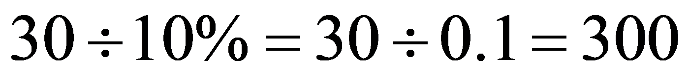
（名），故答案为：300；
（2）
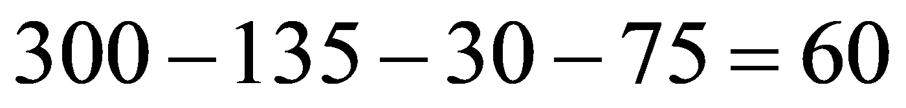
（名），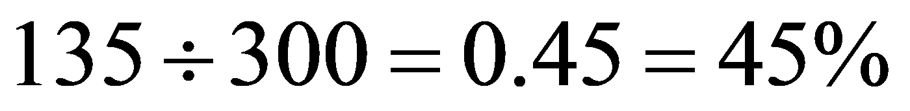
；补全条形统计图和扇形统计图如下：
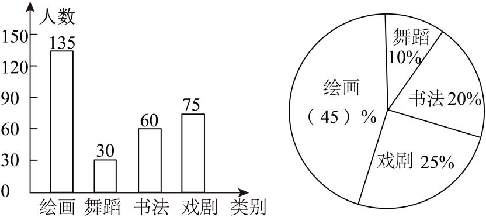
（3）答：爱好绘画的人数最多，多开展绘画类的兴趣班．
【变式3】（23-24八年级下·全国·单元测试）某区教研部门对本区初二年级的学生进行了一次随机抽样问卷调查，其中有这样一个问题：老师在课堂上放手让学生提问和表达（ ）
A．从不 B．很少 C．有时 D．常常 E．总是
答题的学生在这五个选项中只能选择一项，下面是根据学生对该问题的答卷情况绘制的两幅不完整的统计图．

根据以上信息，解答下列问题：
(1)该区共有 名初二年级的学生参加了本次问卷调查；
(2)请把这幅条形统计图补充完整；
(3)在扇形统计图中，“总是”所占的百分比为 ．
【答案】(1)3200
(2)补全条形图如图：
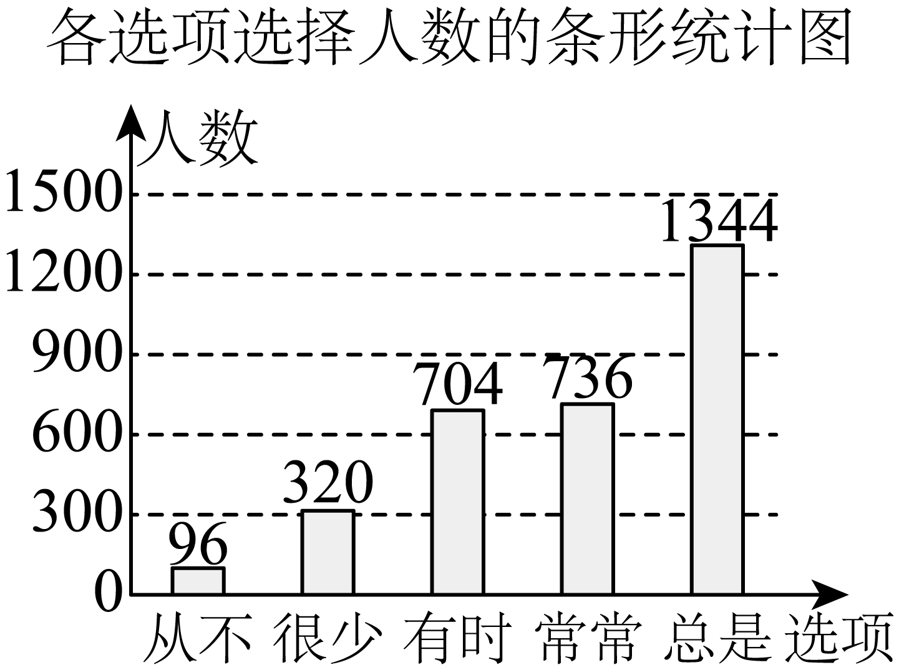
(3)
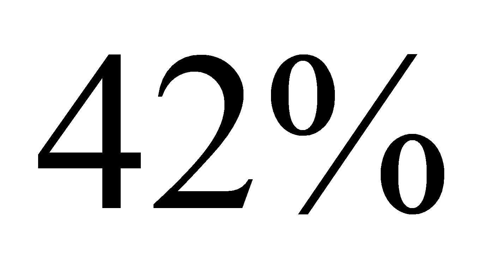
【知识点】求条形统计图的相关数据、条形统计图和扇形统计图信息关联、画条形统计图
【分析】本题考查的是条形统计图 和扇形统计图的综合运用，读懂统计图，从不同的统计图中得到必要的信息是解决问题的关键．
（1）结合两个统计图中的“从不”的人数与所占百分比，即可求出初二年级的学生参加的数量；
（2）用总人数分别减去“从不”、“很少”“常常”、“总是”的人数，计算出“有时”的人数即可将条形统计图补充完整；
（3）利用 “总是”与总数的比乘以 即可得到百分比．
即可得到百分比．
【详解】（1）解：（1）
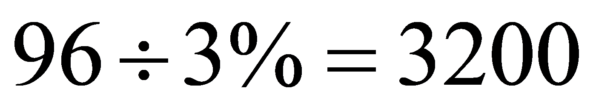
（名）即该区共有3200名初二年级的学生参加了本次问卷调查；
故答案为：3200．
（2）
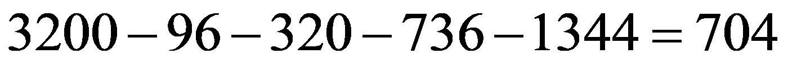
（名）补全的条形统计图如图：
<>
（3）“总是”所占的百分比=
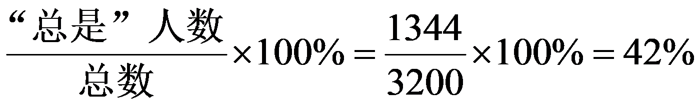
；故答案为：．
题型05 折线统计图和扇形统计图信息关联
【典例5】（2024·湖南·模拟预测） 年5月
年5月
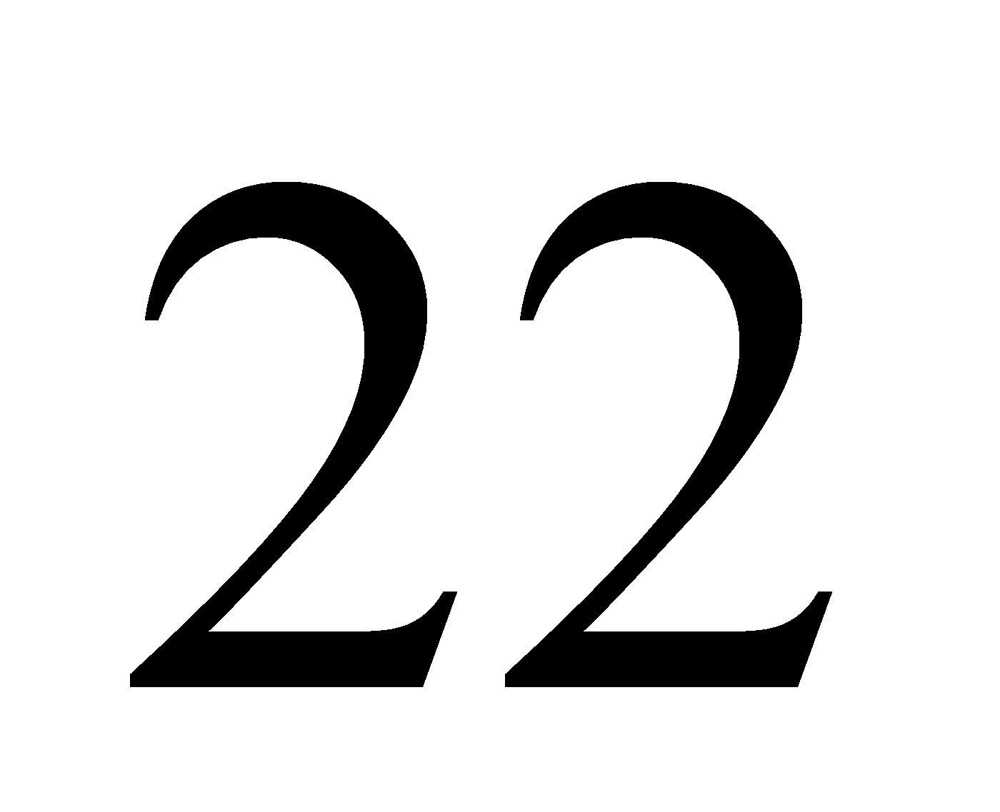
日 点
点 分，袁隆平在湖南长沙逝世；
分，袁隆平在湖南长沙逝世； 年
年 月3日，袁隆平科研团队培育的超级稻在徐州试种取得成功；超级稻“利两优
月3日，袁隆平科研团队培育的超级稻在徐州试种取得成功；超级稻“利两优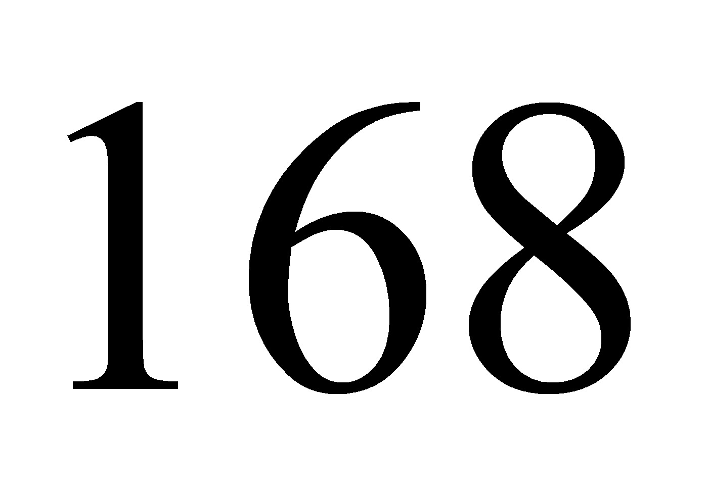
”完亩产达到750公斤．如图，为该科研团队为了解试验田杂交水稻秧苗的长势，从中随机抽取样本对苗高进行了测量，根据统计结果（数据四舍五入取整），绘制统计图．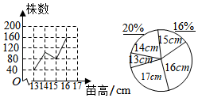
(1)本次抽取的样本水稻秧苗为______株；
(2)求出样本中苗高为
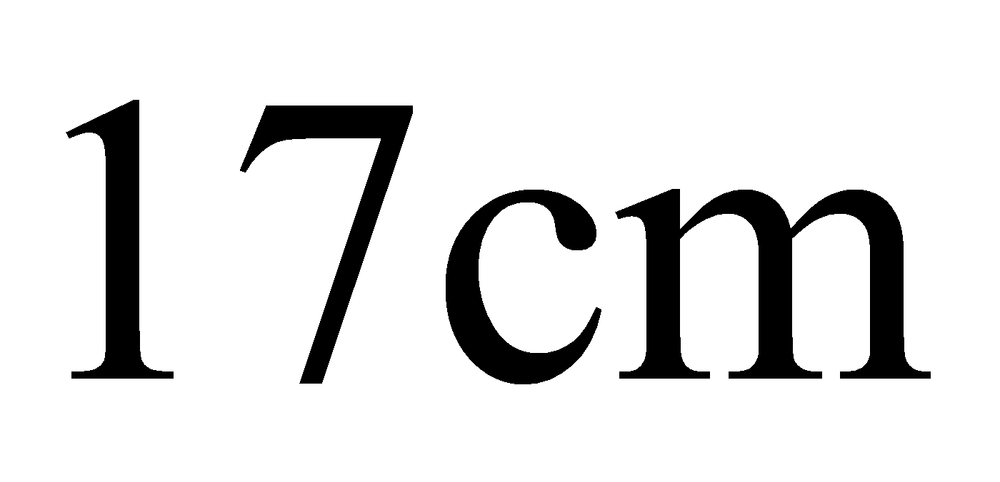
的秧苗的株数，并完成折线统计图；(3)根据统计数据，若苗高大于或等于
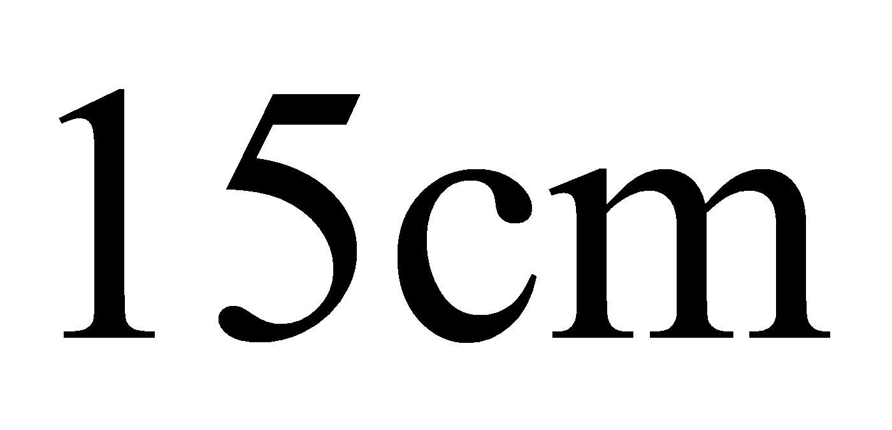
视为优良秧苗，请你估算该试验田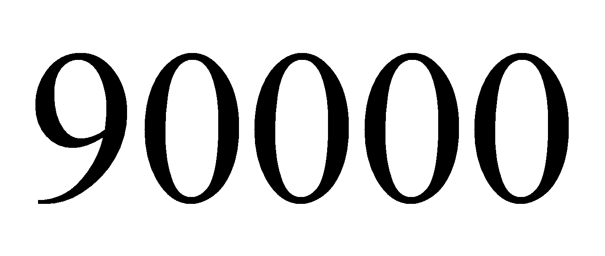
株水稻秧苗中达到优良等级的株数．【答案】(1)
(2)本次抽取的样本水稻秧苗为株，补全折线统计图见解析
(3)估算该试验田株水稻秧苗中达到优良等级的株数有
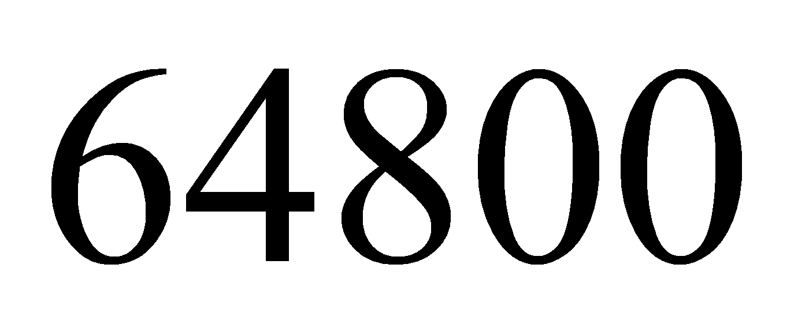
株【知识点】由扇形统计图求总量、由样本所占百分比估计总体的数量、折线统计图
【分析】本题主要考查扇形统计图和折线统计图，样本估计总体，准确找出相关数据，是解题的关键．
（1）用的水稻株数对应的百分数，即可求解；
（2）求出 和的水稻株数，进而可补全统计图；
和的水稻株数，进而可补全统计图；
（3）用
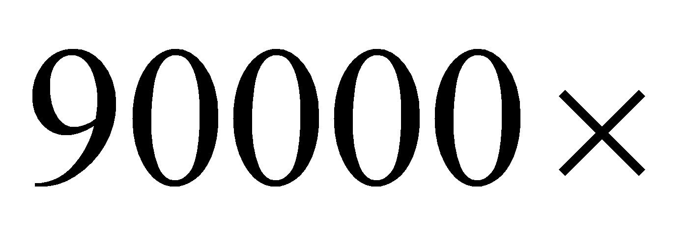
优良等级的百分比，即可求解．【详解】（1）本次抽取的样本水稻秧苗为：
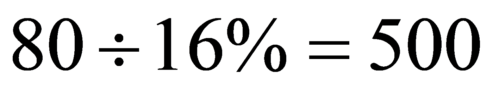
（株）；（2）苗高为的秧苗的株数有
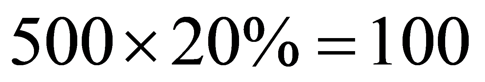
（株），苗高为的秧苗的株数有
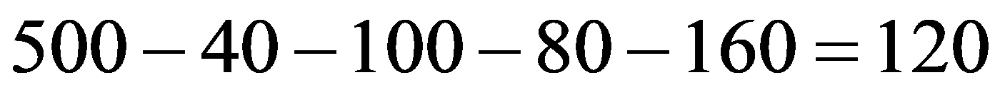
（株），补全统计图如下：
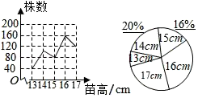
（3）
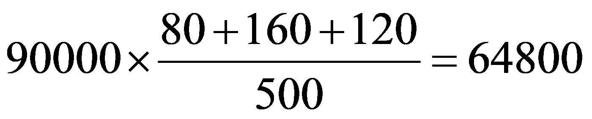
（株），答：估算该试验田株水稻秧苗中达到优良等级的株数有株．
【变式1】（23-24八年级下·河北沧州·阶段练习）某商场试销A、B两款型号的洗碗机，四个月共售出400台．试销结束后，该商场想从中选择一款洗碗机进行经销，请根据提供的两幅统计图完成下列问题．
(1)第四个月销量占总销量的百分比是 %；
(2)通过计算补全洗碗机月销量的折线统计图；
(3)结合折线统计图，判断该商场应选择哪款洗碗机进行经销？请说明理由．
【答案】(1)30
(2)见解析
(3)选择B款洗碗机，理由见解析
【知识点】折线统计图、由扇形统计图求某项的百分比
【分析】本题考查折线统计图和扇形统计图的综合应用，掌握相关知识是解题关键．
（1）先求第四个月的销售量，再除以总量即可得到第四个月销售量占总销售量的百分比；
（2）由折线图求得第三个月A、B两款的销售量为100台，再解得第三个月A款洗碗机的销量为50台，据此解出B的销售量；
（3）观察折线图可得，该商店应选择B款洗碗机进行经销．
【详解】（1）解：
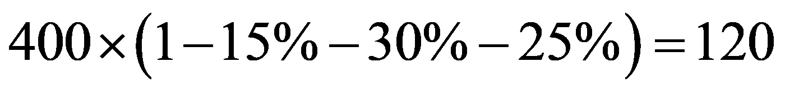
（台），∴第四个月销量占总销量的百分比为：；
故答案为：30；
（2）第三个月A、B两款洗碗机的销量为：（台），
从折线图可知，第三个月A款洗碗机的销量为50台，
第三个月B款洗碗机的销量为（台）；
第四个月B款洗碗机的销量为：（台），
补全洗碗机月销量的折线统计图如下：
（3）该商店应选择B款洗碗机进行经销；理由是B款洗碗机的销量逐月递增，而A款洗碗机的销量有下降趋势．
【变式2】（2024·广东珠海·三模）某校为了解学生最喜爱的数学活动项目，随机抽取若干名学生进行调查，并将调查结果绘制成如下两幅不完整的统计图：
根据以上信息，解答下列问题：
(1)参与此次抽样调查的学生人数是__________人，补全折线统计图；
(2)图2中扇形C的圆心角度数为__________．
(3)全校学生共1500人，估计其中最喜爱“数学竞赛”项目的学生人数是多少？
【答案】(1)120，见解析
(2)90°
(3)最喜爱“数学竞赛”项目的学生人数约为375人．
【知识点】折线统计图、求扇形统计图的圆心角、由样本所占百分比估计总体的数量
【分析】本题考查的是扇形统计图和折线统计图的综合运用．读懂统计图，从不同的统计图中得到必要的信息是解决问题的关键．
（1）根据 的人数和所占的百分比求出调查的总人数，再用总人数减去其它的人数，求出数学展示的人数，从而补全折线统计图；
的人数和所占的百分比求出调查的总人数，再用总人数减去其它的人数，求出数学展示的人数，从而补全折线统计图；
（2）用乘以 所占的百分比，即可得出答案；
所占的百分比，即可得出答案；
（3）用总人数乘以最喜爱“数学竞赛”的学生所占的百分比即可．
【详解】（1）解：此次抽样调查的学生人数是：（人；
数学展示的人数有：（人，
补折线全统计图如下：
故答案为：120；
（2）解：，
故答案为： ；
；
（3）解：（人，
答：最喜爱“数学竞赛”项目的学生人数约为375人．
【变式3】（2023·浙江杭州·模拟预测）2020年新型冠状病毒席卷我国，某校积极开展中学生假期德育活动，决定以抗击肺炎、自我防护、环境保护、疾病预防四个为主题，每名学生选择一个主题，为了解学生的选择意向，随机抽取A，B，C，D四个班级共200名学生进行调查，将调查得到的数据进行整理，绘制成如图的统计图（不完整）．
(1)求扇形统计图中抗击肺炎所在扇形的圆心角度数；
(2)求D班选择自我防护的学生人数，并补全折线统计图；
(3)若该校共有学生2500人，试估计该校选择环境保护的学生人数．
【答案】(1)；
(2)D班选择自我防护的学生人数为 人；图见解析；
人；图见解析；
(3)该校选择环境保护的学生人数为人．
【知识点】由样本所占百分比估计总体的数量、求扇形统计图的圆心角、折线统计图
【分析】本题考查折线统计图、用样本估计总体、扇形统计图，解题的关键是明确题意，找出所求问题需要的条件、利用数形结合的思想解答问题．
（1）由折线图得出选择抗击肺炎的人数，除以总人数得出选择抗击肺炎的百分比，再乘以即可求出扇形统计图中抗击肺炎所在扇形的圆心角度数；
（2）用总人数乘以自我防护所占百分比，得到选择自我防护的学生人数，再减去A，B，C三个班选择自我防护的学生人数，得到D班选择自我防护的学生人数，进而补全折线图；
（3）用2500乘以样本中选择环境保护的学生人数所占的百分比即可．
【详解】（1）解：由题知，抗击肺炎所占百分比为：，
扇形统计图中抗击肺炎所在扇形的圆心角度数为：；
（2）解：（人），
（人），
答：D班选择自我防护的学生人数为人；
补全折线统计图如下所示：
（3）解：（人），
答：该校选择环境保护的学生人数为人．
题型06 条形统计图和折线统计图信息关联
【典例6】（2024·浙江·模拟预测）如图反映的是某综合商场今年1－5月份的商品销售额统计情况，商场1－5月份的销售总额一共是370万元．试解答下面问题：

(1)请补全图1．
(2)商场服装部5月份的销售额是多少万元？
(3)小华观察图2后认为，5月份服装部的销售额比4月份减少了．你同意他的看法吗？为什么？
【答案】(1)见详解
(2) 万元
万元
(3)不同意小华的看法，理由见详解，
【知识点】求条形统计图的相关数据、有理数乘法的实际应用、折线统计图、画条形统计图
【分析】本题主要考查了条形统计图以及折线统计图，有理数乘法的应用，掌握条形统计图以及折线统计图是解题的关键．
（1）先计算出商场4月份的销售额，然后补全条形统计图即可．
（2）用商场5月份的销售额乘以商场服装部5月份的占比即可得出答案．
（3）先计算出商场服装部4月份的销售额，然后和5月份的销售额相比即可得出答案．
【详解】（1）解：商场4月份的销售额是： 万元，
万元，
故补全图1如下：
（2）商场服装部5月份的销售额是∶万元．
（3）不同意小华的看法，理由如下：
商场服装部4月份的销售额是万元，
∵
∴5月份服装部的销售额比4月份多．
【变式1】（2024·江苏南京·一模）人口老龄化是全球性人口发展大趋势，也是我国发展面临的重大挑战．阅读以下统计图并回答问题．

(1)2020年，全国老年人口约为 亿（精确到0.1）；
(2)1990～2020年间，全国人口增长最快的时间段是 （填序号）；
①1990～2000； ②2000～2010； ③2010～2020．
(3)请结合上图提供的信息，从不同角度写出两个与我国人口老龄化相关的结论．
【答案】(1)
(2)①
(3)1990至2020年我国老年人口数量不断增长（答案不唯一）
【知识点】求条形统计图的相关数据、折线统计图
【分析】本题考查条形统计图和折线统计图，解题的关键是根据统计图正确获取信息．
（1）根据条折线统计图和条形统计图数据解答即可；
（2）根据条形统计图数据判断即可；
（3）根据折线统计图信息解答即可．
【详解】（1）解：由折线统计图可知，2020年，全国老年人口约为：（亿．
故答案为：；
（2）解：由条形统计图可知，年间，全国人口增长最快的时间段是，增速为．
故答案为：①；
（3）解：由统计图可知，
①我国人口老龄化逐年增长；
②2000全国老年人口达到：（亿）．
【变式2】（2024·江苏泰州·一模）图1是某商场今年1－5月份各月商品销售总额统计图，图2是该商场今年1－5月份服装部各月销售额占商场当月销售总额的百分比统计图．观察图1和图2，解答下面问题：
(1)来自商场财务部的报告表明，商场1－5月份的销售总额一共是370万元，请你根据这一信息补全图1；
(2)商场服装部5月份的销售额是多少万元？
(3)小强观察图2后认为，5月份服装部的销售额比4月份减少了．你同意他的看法吗？为什么？
【答案】(1)见详解
(2)10.5万元
(3)不同意，5月份服装部销售额比4月份增加了，见详解
【知识点】根据数据描述求频数、折线统计图、求条形统计图的相关数据
【分析】本题考查的是条形统计图和折线统计图的综合运用．读懂统计图，从不同的统计图中得到必要的信息是解决问题的关键．条形统计图能清楚地表示出每个项目的数据；折线统计图表示的是事物的变化情况．
（1）由条形统计图可知：该商场4月份的销售额为万元，故可补全统计图；
（2）由折线图可知：商场服装部5月份的销售额 月份的总销售额
月份的总销售额 服装部的月销售额占当月商场的百分比，即万元；
服装部的月销售额占当月商场的百分比，即万元；
（3）5月份服装部的实际的销售额有万元，而4月份服装部的实际的销售额只有万元，则李强的看法错误．
【详解】（1）解：4月份销售额为：万元，
所以补全统计图为：
（2）解：万元；
（3）解：李强的看法错误，4月份服装部的实际的销售额只有万元，
由于，
所以实际的销售额还是5月份多．
【变式3】（23-24八年级下·河北邯郸·阶段练习）来自某商场财务部的报告表明，商场去年1~5月份的销售总额一共是370万元，图1、图2反映的是商场去年1~5月份的月销售总额和服装部各月销售额占比情况．
(1)去年1~5月份，服装部各月销售额在商场当月销售总额中的占比最高的是______月份；
(2)求商场4月份的销售总额，并求服装部该月的销售额；
(3)某员工认为服装部5月份的销售额比4月份减少了，你认为正确吗？请说明理由．
【答案】(1)1
(2)10.4万元
(3)不正确，见解析
【知识点】求条形统计图的相关数据
【分析】本题考查的是条形统计图和折线统计图的综合运用．读懂统计图，从不同的统计图中得到必要的信息是解决问题的关键．条形统计图能清楚地表示出每个项目的数据．
（1）根据统计图写出即可；
（2）用1-5月份的销售总额减去其它四个月的销售额求出四月份的销售总额，用四月份的销售总额乘以四月销售额在商场当月销售总额中的占比即可得解；
（3）分别求出四月份和五月份的服装部销售额，然后比较即可得解．
【详解】（1）解：根据统计图可知，服装部各月销售额在商场当月销售总额中的占比最高的是1月份，为，
故答案为：1；
（2）商场4月份的销售总额是（万元），
服装部该月的销售额为（万元）；
（3）不正确；
理由：服装部4月份的销售额为10.4万元，5月份的销售额为（万元）．
∵万元万元，
∴该说法不正确．
题型07 条形统计图、扇形统计图、折线统计图信息关联
【典例7】（23-24七年级上·安徽合肥·期末）去年3至8月份期间，A，B，C三种品牌空调的销售情况如下列统计图所示，根据统计图，回答下列问题：
(1)3至8月份期间， 品牌空调销售量最多（填“A”“B”或“C”）；8月份C品牌空调销售量有 台；扇形统计图中，A品牌所对应的扇形的圆心角是 度；
(2)8月份，其他品牌的空调销售总量是多少台？
【答案】(1)B，275，
(2)台
【知识点】折线统计图、条形统计图和扇形统计图信息关联
【分析】题考查了条形图、折线统计图、扇形统计图，熟练掌握和理解统计图中各个数量及数量之间的关系是解题的关键．
（1）从条形统计图、折线统计图可以得出答案；
（2）根据A品牌电脑销售量及A品牌电脑所占百分比即可求出 月份电脑的总的销售量，再减去A，B，C品牌的销售量即可得出答案；
月份电脑的总的销售量，再减去A，B，C品牌的销售量即可得出答案；
【详解】（1）3至8月三种品牌电脑销售量总量最多是B品牌；
8月份，品牌的销售量为275台；
A品牌所对应的扇形的圆心角是，
故答案为：B，275，；
（2）8月，A品牌电脑销售量为 台，A品牌电脑占，
台，A品牌电脑占，
所以，8月份电脑的总的销售量为（台）．
其它品牌的电脑有：（台），
答：其他品牌的空调销售总量是台．
【变式1】（2024·吉林·二模）小婷利用统计知识分析《春秋经传引得》《三国志》《汉书》《后汉书》《史记》五本古文经典和某期现代汉语文本《人民日报》的词汇长度、词汇数量（单位：个）分布情况，研究古人与现代人在撰写文章时的用词习惯，由于十字词以上的词汇数量过少，所以不做研究．下面给出了部分信息：
a．五本古文经典的词汇长度折线图：
 b．五本古文经典的词汇数量扇形图：
b．五本古文经典的词汇数量扇形图：
c．五本古文经典和《人民日报》的词汇长度条形图：
根据以上信息，回答下列问题：
(1)五本古文经典中词汇长度数量最多的是______字词，其次是三字词．
(2)《后汉书》共出现词汇个，计算五本古文经典的词汇数量总数为多少个．
(3)通过分析古今的词汇长度、词汇数量分布情况，说明古人与现代人在撰写文章时用词习惯的共同点（写出一条即可）．
【答案】(1)二；
(2)五本古文经典的词汇数量总数为个；
(3)古人与现代人在撰写文章时都更倾向用二字词、三字词．
【知识点】折线统计图、条形统计图和扇形统计图信息关联
【分析】本题考查了折线统计图，扇形统计图，条形统计图，读懂统计图，获取信息是解题的关键．
（ ）根据折线统计图即可求解；
）根据折线统计图即可求解；
（ ）先求出《后汉书》所占百分比，然后相除即可求解；
）先求出《后汉书》所占百分比，然后相除即可求解；
（ ）古人与现代人在撰写文章时都更倾向用二字词、三字词．
）古人与现代人在撰写文章时都更倾向用二字词、三字词．
【详解】（1）解：根据五本古文经典的词汇长度折线图五本古文经典中词汇长度数量最多的是二字词，
故答案为：二；
（2）解：，
（个），
答：五本古文经典的词汇数量总数为个；
（3）解：古人与现代人在撰写文章时都更倾向用二字词、三字词．
【变式2】（23-24九年级下·全国·课后作业）小吴家准备购买一台电视机，小吴将收集到的某地区A、B、C三种品牌电视机销售情况的有关数据统计如下：
根据上述三个统计图，请解答：
(1)年三种品牌电视机销售总量最多的是________品牌，月平均销售量最稳定的是________品牌．
(2)2022年其他品牌的电视机年销售总量是多少万台？
(3)货比三家后，你建议小吴家购买哪种品牌的电视机？说说你的理由．
【答案】(1)B，C
(2)
(3)建议小吴家购买B（或C）品牌的电视机，理由见解析
【知识点】折线统计图、条形统计图和扇形统计图信息关联、求条形统计图的相关数据
【分析】本题考查了条形统计图，折线统计图，扇形统计图，熟练掌握条形统计图、折线统计图及扇形统计图的特点是解题关键．
（1）从条形统计图、折线统计图可以得出答案；
（2）求出总销售量，“其它”的所占的百分比，即可得出结果；
（3）从市场占有率、平均销售量等方面提出建议．
【详解】（1）解：由条形统计图可知：
A品牌总销量为978；
B品牌总销量为1746；
C品牌总销量为1602；
最多的为B品牌．
由折线统计图可知：折线的波动最小的是C品牌，
月平均销售量最稳定的是C品牌．
故答案：B；C．
（2）2022年B品牌月平均销售量为20（万台），所以全年为（万台）．
又B品牌市场占有率为，
（万台）．
其他品牌占有：，
（万台），
∴2022年其他品牌的电视机年销售总量是万台．
（3）(答案不唯一)建议小吴家购买C品牌的电视机，原因是C品牌的电视机2022年的市场占有率最高，且年的月平均销售量最稳定．
建议小吴家购买B品牌的电视机，原因是B品牌的电视机年的销售总量最多，受到广大顾客的青睐．
题型08 频数分布直方图
【典例8】（24-25九年级上·云南玉溪·期中）沾益区教育体育局为了解八年级学生每天完成课外作业时间的情况，从全区八年级学生中随机抽取了部分学生每天完成课外作业的时间进行调查，并将调查结果绘制成如下图表：
时间（小时） | 频数（人数） | 频率 |
| 4 | 0.1 |
c | 0.3 | |
| 10 | 0.25 |
| 8 | b |
6 | 0.15 | |
合计 | a | 1 |


(1)表中a，b所表示的数分别为 ，
， ；
；
(2)请在图中补全频数分布直方图；
(3)根据规定，学生每天完成课外作业的时间不超过1.5小时，那么全区4800名八年级学生中每天完成课外作业时间超过规定的学生约有多少人?
【答案】(1)
(2)见解析
(3)
【知识点】由样本所占百分比估计总体的数量、频数分布直方图、根据数据填写频数、频率统计表
【分析】本题考查读频数分布直方图的能力和利用统计图获取信息的能力；解题的关键是在利用统计图获取信息时，必须认真观察、分析、研究统计图，进而作出正确的判断和解决问题．
（1）首先求得总人数，然后根据频率、频数与数据总数之间的关系求得 和
和 的值；
的值；
（2）先求出c，根据（1）即可直接补全直方图；
（3）利用总人数乘以对应的频率即可求解．
【详解】（1）解：，，
故答案为：；
（2）解：，故补全如图：
（3）解：由题意得，人，
答：全区4800名八年级学生中每天完成课外作业时间超过规定的学生约有1680人．
【变式1】（24-25九年级上·黑龙江大庆·阶段练习）某校为了解学生的课外阅读情况，对部分学生进行了调查，并统计他们平均每天的课外阅读时间 （单位：），然后利用所得数据绘制如下两幅不完整的统计图．
（单位：），然后利用所得数据绘制如下两幅不完整的统计图．
请你根据以上信息解答下列问题：
(1)本次调查活动采取了 调查方式，样本容量是 ．
(2)图2中C的圆心角度数为 度，补全图1的频数分布直方图．
(3)该校有900名学生，估计该校学生平均每天的课外阅读时间不少于的人数．
【答案】(1)抽样，50
(2)144，图见解析
(3)684名
【知识点】由样本所占百分比估计总体的数量、条形统计图和扇形统计图信息关联、判断全面调查与抽样调查、频数分布直方图
【分析】本题考查条形统计图与扇形统计图相关联，由样本估计总体．根据条形统计图和扇形统计图得出必要的信息和数据是解题关键．
（1）由题意可知本次调查活动采取抽样调查的方式，用A除以A所占百分比即可求出样本容量；
（2）用样本容量减其它时间人数，得出C的人数，即可补全统计图，用乘C的人数所占比例即可求出C的圆心角度数；
（3）先求出样本中平均每天的课外阅读时间不少于的人数，即可求出其所占比例，再乘该校总人数即可．
【详解】（1）解：本次调查活动采取了抽样调查方式，样本容量是，
故答案为：抽样，50；
（2）解：∵C时间段的人数为（人），
∴补全条形图如图，
∴图2中C的圆心角度数为；
（3）解：样本中平均每天的课外阅读时间不少于的人数为（名），
（名）．
答：估计该校有684名学生平均每天的课外阅读时间不小于．
【变式2】（24-25八年级上·重庆·期中）为提高学生学习数学的兴趣，培养学生的数学运算能力，某学校七年级举行了一次“数学运算能力大比拼”活动，随机抽取两个班（分别记作甲班、乙班），对某次数学成绩进行了统计．已知抽取的两个班的人数相同，把所得数据绘制成如下统计图表．根据图表提供的信息，解答下列问题．
甲、乙两班数学成绩统计表
组别 | 分数 | 人数 |
A |
| 4 |
B | 2 | |
C |
| m |
D | 38 | |
E | 27 |


(1)样本中，乙班学生成绩在D组的人数是______人，乙班总人数是______人；在扇形统计图中，E组对应的圆心角的度数是______；
(2) ______，请补全频数分布直方图；
______，请补全频数分布直方图；
(3)本次数学考试成绩得分在90分以上（含90）为合格，已知七年级共有720名学生，请估计七年级本次数学考试成绩合格的人数约有多少？·
【答案】(1)
(2)19，图见解析
(3)520名
【知识点】由样本所占百分比估计总体的数量、求扇形统计图的圆心角、频数分布表、频数分布直方图
【分析】本题考查统计图表，从统计图表中有效的获取信息是解题的关键：
（1）用 组总人数减去甲班中组的人数，求出乙班中的组人数，再除以所占的比例求出乙班总人数，进而求出甲班中
组总人数减去甲班中组的人数，求出乙班中的组人数，再除以所占的比例求出乙班总人数，进而求出甲班中 组人数，进一步求出乙班中组人数，再用360度乘以乙班中组所占的比例求出圆心角的度数即可；
组人数，进一步求出乙班中组人数，再用360度乘以乙班中组所占的比例求出圆心角的度数即可；
（2）乙班中 组人数，再加上甲班中组人数，求出
组人数，再加上甲班中组人数，求出 的值，根据甲班中组人数，补全直方图即可；
的值，根据甲班中组人数，补全直方图即可；
（3）利用样本估计总体的思想进行求解即可．
【详解】（1）解：乙班学生成绩在D组的人数是，
乙班总人数是：；
所以甲班人数也为：45，
甲班中成绩在组的人数为：，
所以E组对应的圆心角的度数是；
故答案为：
（2），由（1）知：甲班中成绩在组的人数为12，补全直方图如图：
（3）（名）
答：七年级本次数学考试成绩合格的人数约520名．
【变式3】（23-24八年级下·河北石家庄·期末）某校想了解学生每周的课外阅读时间情况，随机调查了部分学生，对学生每周的课外阅读时间 （单位：小时）进行分组整理，并绘制了如图所示的不完整的频数分布直方图和扇形统计图（
（单位：小时）进行分组整理，并绘制了如图所示的不完整的频数分布直方图和扇形统计图（ 所对应的是21人）．根据图中提供的信息．解答下列问题：
所对应的是21人）．根据图中提供的信息．解答下列问题：
|

(1)这次抽样调查的学生人数是________人；并补全频数分布直方图；
(2)扇形统计图的值为________，其中“”组对应的圆心角度数为________；
(3)已知该校共有学生 人，请根据调查结果估计该校每周课外阅读时间不少于
人，请根据调查结果估计该校每周课外阅读时间不少于 小时的学生人数．
小时的学生人数．
【答案】(1) ，详见解析；
，详见解析；
(2) ；；
；；
(3)估计该校每周课外阅读时间不少于小时的学生人数约为人．
【知识点】求扇形统计图的圆心角、频数分布直方图、由样本所占百分比估计总体的数量
【分析】（） 组人数
组人数 组所占百分比
组所占百分比 被调查总人数，将总人数组所占百分比求出组人数，即可补全频数分布直方图；
被调查总人数，将总人数组所占百分比求出组人数，即可补全频数分布直方图；
（）组人数调查总人数即可得的值；组对应的圆心角度数组占调查人数比例 ；
；
（）将样本中课外阅读时间不少于小时的百分比乘以可得；
本题考查了频数分布直方图和扇形统计图的综合运用，读懂统计图，从不同的统计图中得到必要的信息是解题的关键．
【详解】（1）这次被调查的学生共有：（人），
组人数为：（人），
补全图形如下：
故答案为：；
（2），则，
组对应的圆心角为：；
故答案为：；；
（3）（人）．
答：估计该校每周课外阅读时间不少于小时的学生人数约为人．

一、单选题
1．（2023·贵州六盘水·一模）新课标（2022版）要求学校教育要坚持“立德树人”，实施“跨学科学习、项目式学习”．教务处为了解学校老师对新课标的关注度，获得数据的方法是（ ）
A．测量 B．实验 C．调查 D．直接观察
【答案】C
【知识点】判断全面调查与抽样调查
【分析】本题考查调查收集数据的过程与方法，理解调查的目的和要求是正确解答的关键．
根据调查的目的和要求，结合具体的问题情境进行判断即可．
【详解】解：由于教务处为了解学校老师对新课标的关注度，可采用全面调查的方式进行，
故选：C．
2．（23-24七年级下·贵州贵阳·阶段练习）下列调查中，调查方式选择合理的是（ ）
A．为了了解某市初中生每天锻炼所用的时间，选择全面调查
B．为了了解遵义电视台《直播遵义》节目的收视率，选择全面调查
C．为了了解四川朝天椒的品质情况，选择全面调查
D．为了了解武汉老年人的身体健康状况，选择抽样调查
【答案】D
【知识点】判断全面调查与抽样调查
【分析】本题考查了抽样调查和全面调查的区别，选择普查还是抽样调查要根据所要考查的对象的特征灵活选用，一般来说，对于具有破坏性的调查、无法进行普查、普查的意义或价值不大，应选择抽样调查，对于精确度要求高的调查，事关重大的调查往往选用普查．
【详解】A．为了解某市初中生每天锻炼的时间，适合选择抽样调查，故本选项不符合题意；
B．为了了解遵义电视台《直播遵义》节目的收视率，适合选择抽样调查，故本选项不符合题意；
C．为了了解四川朝天椒的品质情况，适合选择抽样调查，故本选项不符合题意；
D．为了了解武汉老年人的身体健康状况，适合选择抽样调查，故本选项符合题意．
故选：D．
3．（23-24八年级下·云南大理·期末）为了解游客在昆明、大理和丽江这三个城市旅游的满意度，数学小组的同学商议了以下四个收集数据的方案．其中最合理的是（ ）
A．在云南调查1000名游客
B．在昆明调查1000名游客
C．在三个城市一共调查1000名游客
D．在三个城市各调查1000名游客
【答案】D
【知识点】抽样调查的可靠性、调查收集数据的过程与方法
【分析】本题考查了调查收集的过程与方法，采取抽样调查时，应能够保证被抽中的调查样本在总体中的合理、均匀分布，调查出现倾向性偏差的可能性是极小的，样本对总体的代表性很强．
【详解】解：选项A、B选择的调查对象没有代表性，故不合题意；
选项C选择的各个城市调查数量没有说明，没有均匀分布，不是很合理；
选项D在三个城市各调查1000名游客，具有代表性，最合理；
故选：D．
4．（23-24七年级上·山西运城·期末）为了解西安市近9万名考生的数学成绩，教研部门从中抽取800名考生的数学成绩进行统计分析，下列说法正确的是（ ）
A．9万名考生是总体 B．每位考生的数学成绩是个体
C．800名考生是总体的一个样本 D．800名考生是样本容量
【答案】B
【知识点】总体、个体、样本、样本容量
【分析】本题考查了总体、个体、样本、样本容量的知识，解题要分清具体问题中的总体、个体与样本，关键是明确考查的对象．总体、个体与样本的考查对象是相同的，所不同的是范围的大小．样本容量是样本中包含的个体的数目，不能带单位．根据样本，个体，总体和样本容量的概念分别判断．
【详解】解：A、9万名考生的数学成绩是总体，故选项错误；
B、每名考生的数学成绩是个体，故选项正确；
C、800名考生的数学成绩是总体的一个样本，故选项错误；
D、800是样本的容量，故选项错误．
故选：B．
5．（2024·河北·模拟预测）某班组织了关于“2023全国两会《政府工作报告》知多少”的问卷调查后，绘制了如图所示的两幅尚不完整的统计图，由图可知，下列说法错误的是（ ）

A．折线统计图能清楚地反映各部分的人数变化情况
B．扇形统计图中“基本了解”对应的扇形圆心角是90°
C．全班学生中“基本了解”的人数比“了解很少”的人数多5
D．全班学生中“非常了解”的人数是“了解很少”的人数的两倍
【答案】C
【知识点】求扇形统计图的某项数目、折线统计图
【分析】本题主要考查了折线统计图和扇形统计图，先根据折线统计图的特点解答A，再用基本了解所占的百分比乘以 可得圆心角度数判断B，然后求出总人数，可知“了解很少”的人数判断C，D即可．
可得圆心角度数判断B，然后求出总人数，可知“了解很少”的人数判断C，D即可．
【详解】因为折现统计图能清楚地反映各部分的人数变化情况，所以A正确；
由，可知“基本了解”对应的扇形圆心角是，所以B正确；
由统计图可知“了解”的人数是30人，占，则总人数为（人），可知“了解很少”的人数为，则，“基本了解”的人数比“了解很少”的人数多10，所以C错误；
由，可知“非常了解”的人数是“了解很少”的两倍，所以D正确．
故选：C．
二、填空题
6．（2024七年级上·全国·专题练习）某地区有 名学生参加中考，为了了解他们的数学考试情况，评卷人从中抽取了
名学生参加中考，为了了解他们的数学考试情况，评卷人从中抽取了 名考生的数学成绩进行统计．有下列说法：①每名考生是个体；②每名考生的数学成绩是定量数据；③这名考生是总体；④这名考生的数学成绩是总体；⑤名考生是总体的一个样本；⑥名考生的数学成绩是总体的一个样本；⑦这属于普查；⑧这属于抽样调查．其中正确的是 （填序号）．
名考生的数学成绩进行统计．有下列说法：①每名考生是个体；②每名考生的数学成绩是定量数据；③这名考生是总体；④这名考生的数学成绩是总体；⑤名考生是总体的一个样本；⑥名考生的数学成绩是总体的一个样本；⑦这属于普查；⑧这属于抽样调查．其中正确的是 （填序号）．
【答案】②④⑥⑧
【知识点】总体、个体、样本、样本容量、判断全面调查与抽样调查
【分析】本题考查了抽样调查，总体、个体、样本等知识．熟练掌握抽样调查，总体、个体、样本是解题的关键．
根据抽样调查，样本的总体、个体的定义进行判断作答即可．
【详解】解：由题意知，每名考生的数学成绩是个体，①错误，故不符合要求；
每名考生的数学成绩是定量数据，②正确，故符合要求；
这名考生的数学成绩是总体，③错误，故不符合要求；④正确，故符合要求；
名考生的数学成绩是总体的一个样本，⑤错误，故不符合要求；⑥正确，故符合要求；
该调查属于抽样调查，⑦错误，故不符合要求；⑧正确，故符合要求，
故答案为：②④⑥⑧．
7．（2024七年级上·全国·专题练习）小明将他的8次数学测验成绩按顺序绘成了如图所示的两幅统计图．
若小明想向他的父母说明他数学成绩的提高情况，他应向父母展示统计图 （填序号）．
【答案】①
【知识点】选择合适的统计图
【分析】本题主要考查了折线统计图的相关知识，小明要向他的父母说明他的数学成绩提高的情况，应展示出成绩提高的幅度大；两幅图横轴上同一个单位长度表示的意义相同，而纵轴上同一个单位长度表示的意义不同，①图被纵向拉高了，看上去成绩提高的幅度比②图的大，据此解答即可．
【详解】解：若小明要向他的父母说明他的数学成绩的提高情况，他应向父母展示统计图①．
理由为：两幅图横轴上同一个单位长度表示的意义相同，而纵轴上同一个单位长度表示的意义不同，①图被纵向拉高了，看上去成绩提高的幅度比②图的大．
故答案为：①．
8．（24-25九年级上·河北秦皇岛·期中）某养殖户为估计鱼塘中鱼的数量，先随机捕捞了 条鱼，在每条鱼身上做好标记后放回，一周后，再从鱼塘中随机捕捞
条鱼，在每条鱼身上做好标记后放回，一周后，再从鱼塘中随机捕捞 条鱼，发现其中
条鱼，发现其中 条鱼有标记，从而估计该鱼塘中鱼的数量为 条．
条鱼有标记，从而估计该鱼塘中鱼的数量为 条．
【答案】
【知识点】由样本所占百分比估计总体的数量
【分析】本题考查了用样本估记总体，先求出有记号的鱼在第二次捕捞的鱼中所占的比例，然后根据用样本中有记号的鱼所占的比例等于鱼塘中有记号的鱼所占的比例，即可求得鱼的总条数．
【详解】解：第二次从鱼塘中随机捕捞的条鱼中有标记的鱼有条，
从而可得：第一次捕捞的条鱼占鱼塘中鱼的总数量的比例大约为，
所以鱼塘中鱼的总数量大约为
故答案为： ．
9．（23-24七年级下·全国·单元测试）为了解某校1000名学生在进行家务劳动时对家用燃气设备安全知识的掌握情况，随机抽取100名学生参加问卷测试，将成绩进行整理得到频数直方图（每一组含前一个边界值，不含后一个边界值）如图所示，则该校成绩为80分及以上的学生约有 人．
【答案】520
【知识点】由样本所占百分比估计总体的数量
【分析】本题主要考查了用样本估计总体，正确计算出80分及以上的学生所占比例是解答本题的关键．
先计算出80分及以上的学生所占比例，再乘以1000即可得到答案．
【详解】（人）
∴该校成绩为80分及以上的学生约有520人．
故答案为：520．
10．（23-24八年级上·全国·课后作业）为调查某校学生对新闻、体育、动画、娱乐、戏曲五类电视节目的喜爱情况，随机抽取部分学生进行调查(每名同学只能选择其中一类节目)，并根据调查数据画出如图的扇形统计图．

根据图中提供的信息，回答下列问题：
（1）喜爱体育节目对应扇形图中的a的值为 ；
（2）在扇形统计图中，喜爱娱乐节目对应扇形图的圆心角的大小为  ．
．
【答案】 20 126
【知识点】由扇形统计图求某项的百分比、求扇形统计图的圆心角
【分析】此题主要考查了扇形图的应用，关键是根据扇形统计图求出喜爱体育节目的学生占总人数百分比．
（1）根据扇形图可以得出该校喜爱体育节目的学生所占比例，即可得 的值；
的值；
（2）用乘以喜欢娱乐节目所占的百分比即可得出对应扇形的圆心角度数．
【详解】解：（1）根据扇形图可得：
该校喜爱体育节目的学生所占比例为：，
，
故答案为：20；
（2）喜欢娱乐节目对应扇形的圆心角度数是，
故答案为：126．
三、解答题
11．（2024·湖南长沙·模拟预测）为切实做好“十四五”期间我国眼健康工作，进一步提高人民群众眼健康水平，持续推进我国眼健康事业高质量发展，结合当前工作现状，国家卫健委制定了《“十四五”全国眼健康规划（2021-2025年）》，某校数学统计小组为了解该校学生的视力健康状况，从全校学生中随机抽取部分学生进行视力调查．根据调查结果和视力有关标准，绘制了两幅不完整的统计图．请根据图中信息解答下列问题：
(1)调查过程中所抽取的学生样本数为________；
(2)试写出扇形统计图中“轻度近视”对应的扇形的圆心角的度数，并补全条形统计图；
(3)若该校共有学生3000人，请估计该校学生中近视程度为“轻度近视”的人数．
【答案】(1)200
(2)；见解析
(3)1050人
【知识点】条形统计图和扇形统计图信息关联、由扇形统计图求总量、求扇形统计图的圆心角、由样本所占百分比估计总体的数量
【分析】本题主要考查了条形统计图与扇形统计图信息相关联，用样本估计总体，正确读懂统计图是解题的关键．
（1）用“视力正常”的人数除以其人数占比即可求出抽取的学生人数；
（2）先求出“中度近视”的人数，进而求出“轻度近视”的人数，由此补全统计图即可；再用乘以“轻度近视”的人数占比即可求出对应的圆心角度数；
（3）用乘以样本中“轻度近视”的人数占比即可得到答案．
【详解】（1）解：所抽取的学生人数为：．
（2）解；样本中“中度近视”的人数为：（人），
“高度近视”的人数为：（人），
补全条形统计图如下：
扇形统计图中“轻度近视”对应的扇形的圆心角的度数为：；
（3）解：（人），
答：估计该校学生中近视程度为“轻度近视”的人数约1050人．
12．（2024·天津河北·模拟预测）某地区教育部门为了解初中数学课堂中学生参与情况，并按“主动质疑、独立思考、专注听讲、讲解题目”四个项目进行评价．检测小组随机抽查部分学校若干名学生，并将抽查学生的课堂参与情况绘制成如图所示的扇形统计图和条形统计图（均不完整）．请根据统计图中的信息解答下列问题：

(1)本次抽查的样本容量是_____；
(2)在扇形统计图中，“主动质疑”对应的圆心角为_____；
(3)将条形统计图补充完整；
(4)如果该地区初中学生共有 名，那么在课堂中能“独立思考”的学生约有多少人？
名，那么在课堂中能“独立思考”的学生约有多少人？
【答案】(1)
(2)
(3)补图见解析
(4)人
【知识点】由样本所占百分比估计总体的数量、条形统计图和扇形统计图信息关联、总体、个体、样本、样本容量、画条形统计图
【分析】本题考查了扇形统计图和条形统计图的信息关联、样本估计总体等知识．
（1）用专注听讲的人数除以对应的百分比即可；
（2）用 乘以“主动质疑”的百分比即可；
（3）求出“讲解题目”的人数，据此补全统计图即可；
（4）该地区初中学生总数乘以样本中“独立思考”的学生的占比即可得到答案．
【详解】（1）解：本次调查的样本容量为 (人)；
故答案为：
（2）“主动质疑”所在的扇形的圆心角的度数是：；
故答案为：
（3）“讲解题目”的人数是： (人)．
（4） (人)，
答：在课堂中能“独立思考”的学生约有人．
13．（22-23八年级上·广西柳州·期末）某校积极开展中学生社会实践活动，决定成立文明宣传、环境保护、交通监督三个志愿者队伍，每名学生最多选择一个队伍，为了了解学生的选择意向，随机抽取A，B，C，D四个班，共200名学生进行调查．将调查这200名学生得到的数据进行整理，绘制成如下2幅统计图（均不完整）．
(1)D班选择环境保护的学生人数为 ，并补全折线统计图；
(2)扇形统计图中交通监督所在扇形的圆心角度数为 ．
(3)若该校共有学生2500人，试估计该校选择文明宣传的学生人数．
【答案】(1)15，图见解析
(2)97.2°
(3)估计该校选择文明宣传的学生人数为950人
【知识点】折线统计图、由样本所占百分比估计总体的数量、求扇形统计图的圆心角
【分析】本题考查了扇形与折线统计图的综合，用样本估计总体，求一个扇形的圆心角，正确掌握相关性质内容是解题的关键．
（1）先根据扇形统计图可得选择环境保护的学生总人数，再将去 班选择环境保护的学生人数可得D班选择环境保护的学生人数，据此补全折线统计图即可；
班选择环境保护的学生人数可得D班选择环境保护的学生人数，据此补全折线统计图即可；
（2）利用360°乘以选择交通监督的学生人数所占百分比即可得；
（3）利用该校学生总人数乘以选择文明宣传的学生人数所占百分比即可得．
【详解】（1）解：选择环境保护的学生总人数为 （人），
（人），
则D班选择环境保护的学生人数为（人），
故答案为：15人．
补全折线统计图如下：
（2）解：依题意，
即扇形统计图中交通监督所在扇形的圆心角度数为97.2°，
故答案为：97.2°．
（3）解：依题意，（人），
答：估计该校选择文明宣传的学生人数为950人．
14．（24-25九年级上·湖南岳阳·开学考试）某中学举行了2024年奥运会相关知识的竞赛，赛后随机抽查部分参赛同学成绩，并制作成图表如下．
分数段 | 频数 | 频率 |
|
| |
|
|
|
| ||


请根据图表提供的信息，解答下列问题：
(1)表中的数 ；
；
(2)请在图中补全频数分布直方图；
(3)若绘制扇形统计图，分数段 所对应扇形的圆心角的度数是 ；
所对应扇形的圆心角的度数是 ；
(4)全校共有2000名学生参加比赛，估计该校成绩不低于80分的学生有多少人？
【答案】(1)
(2)见解析
(3)
(4)估计该校成绩不低于80分的学生有800人．
【知识点】由样本所占百分比估计总体的数量、求扇形统计图的圆心角、频数分布表、频数分布直方图
【分析】本题主要考查调查与统计的相关概念和计算，掌握频数的计算，根据频数估算总体，圆心角的计算方法是解题的关键．
（1）根据频率的和为 ，即可求解；
，即可求解；
（2）根据频数与频率估算总体的数量可得抽样数量，由此可得m的值，即可补全频数分布直方图；
（3）根据圆心角度数的计算方法即可求解；
（4）根据频数估算总体的数量的方法即可求解．
【详解】（1）解：由题意得，，
故答案为：；
（2）解：（人），
∴，
补全频数分布直方图如图，
（3）解：，
故答案为：；
（4）解：，
∴估计该校成绩不低于 分的学生有人．
分的学生有人．
15．（2024·贵州·模拟预测）2022年11月29日，搭载神舟十五号载人飞船的长征二号F遥十五运载火箭顺利升空，基本完成了空间站“T”字基本构型的组装建造，中国空间站建成后，将转入为期10年以上的应用与发展阶段，为人类探索太空提供重要的合作平台，为了解学生对我国航天科技及空间站的知晓情况，某校团委在七、八两个年级开展了“航天梦”科普知识竞赛活动，并各随机抽取了50名同学的成绩(成绩分段标准一致)进行整理，得到以下信息：
信息一：七年级学生成绩的频数分布直方图和八年级学生成绩的扇形统计图如下：
信息二：成绩在D组的学生中，八年级比七年级少2人．
请根据以上信息，解答下列问题：
(1)八年级成绩在 C组的有 人；
(2)该校七年级学生有750人，八年级学生有700人，若成绩在80分及以上为优秀，请估计七八年级竞赛成绩为优秀的学生总人数；
(3)根据调查的结果，请为该校航天科技知识的普及提出一条合理化建议．
【答案】(1)29
(2)估计七八年级竞赛成绩为优秀的学生总人数约204人
(3)见解析
【知识点】由样本所占百分比估计总体的数量、由扇形统计图推断结论、频数分布直方图
【分析】（1）先求得七年级学生成绩在D组的学生人数，再求得八年级学生成绩在D组、A组、B组的学生人数，据此计算即可求解；
（2）用样本估计总体计算可得；
（3）根据成绩的分布情况结合普及航天科技知识提出建议．
【详解】（1）解：七年级学生成绩在D组的学生有（人），
则八年级学生成绩在D组的学生有（人），
八年级学生成绩在A组的学生有（人），
八年级学生成绩在B组的学生有 （人），
（人），
∴八年级学生成绩在C组的有（人）；
（2）解：(人)，
答：估计七八年级竞赛成绩为优秀的学生总人数约204人；
（3）解：成绩高于80分的只占调查人数的和 ，还需要进一步加强航天科技知识推广力度，增长学生对我国航天科技及空间站的相关知识，提高学生航天科技知识的普及率．
，还需要进一步加强航天科技知识推广力度，增长学生对我国航天科技及空间站的相关知识，提高学生航天科技知识的普及率．
【点睛】此题主要考查了频数分布直方图，扇形统计图，用样本估计总体，读频数分布直方图的能力和利用统计图获取信息时，必须认真观察、分析、研究统计图，才能作出正确的判断和解决问题．
16．（21-22七年级下·浙江宁波·期末）小聪家准备购买一台电视机，小聪将收集到的某地区A，B，C三种品牌电视机销售情况的有关数据统计如下：

根据上述三个统计图，请解答：
(1)年三种品牌电视机销售总量最多的是______品牌，2021年比2020年A品牌月平均销售量的增长率为______．
(2) 年其他品牌的电视机年销售总量是多少万台？
年其他品牌的电视机年销售总量是多少万台？
(3)货比三家后，你建议小聪家购买哪种品牌的电视机？说说你的理由．
【答案】(1)B，
(2)2021年其他品牌的电视机年销售总量是万台
(3)见解析
【知识点】折线统计图、由条形统计图推断结论、求扇形统计图的某项数目
【分析】（1）从条形统计图、折线统计图可以得出答案；
（2）求出总销售量及“其它”的所占的百分比，即可得出答案；
（3）从市场占有率、平均销售量、增长率等方面提出建议．
【详解】（1）解：由条形统计图可得，年三种品牌电视机销售总量最多的是B品牌；
由折线统计图可得，2021年比2020年A品牌月平均销售量的增长率为：；
故答案为：B，；
（2）解：（万台），
，
（万台），
答：2020年2021年其他品牌的电视机年销售总量是万台；
（3）解：因为B品牌2021年的市场占有率最高，且5年的月销售量最稳定；建议购买B品牌，
因为A品牌近五年的月平均销售总量逐年稳步上升，建议购买A品牌，答案不唯一
【点睛】考查条形统计图、折线统计图、扇形统计图的意义，理解统计图中各个数量及数量之间的关系是解决问题的关键．